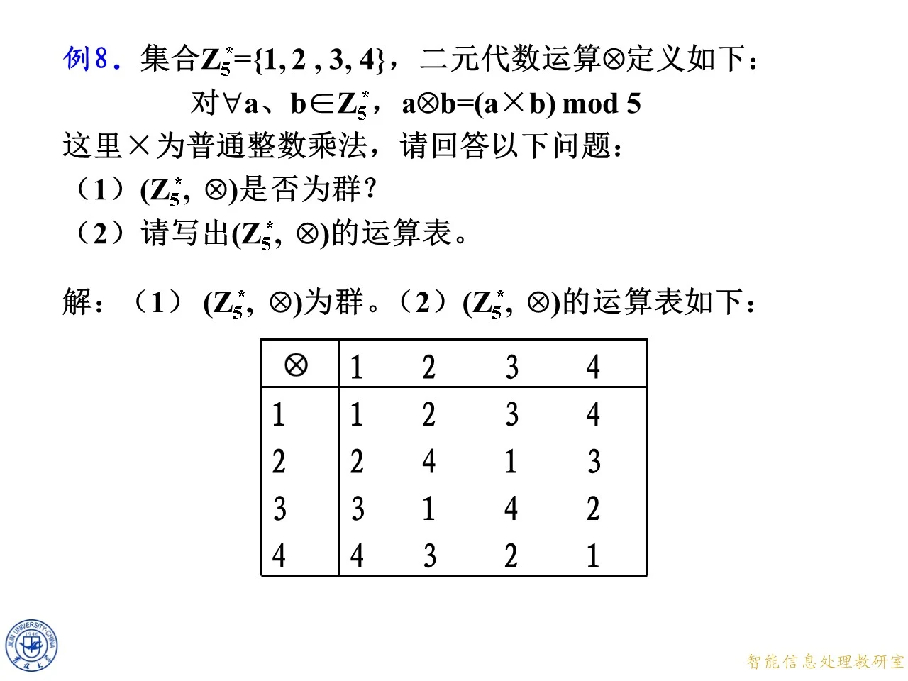
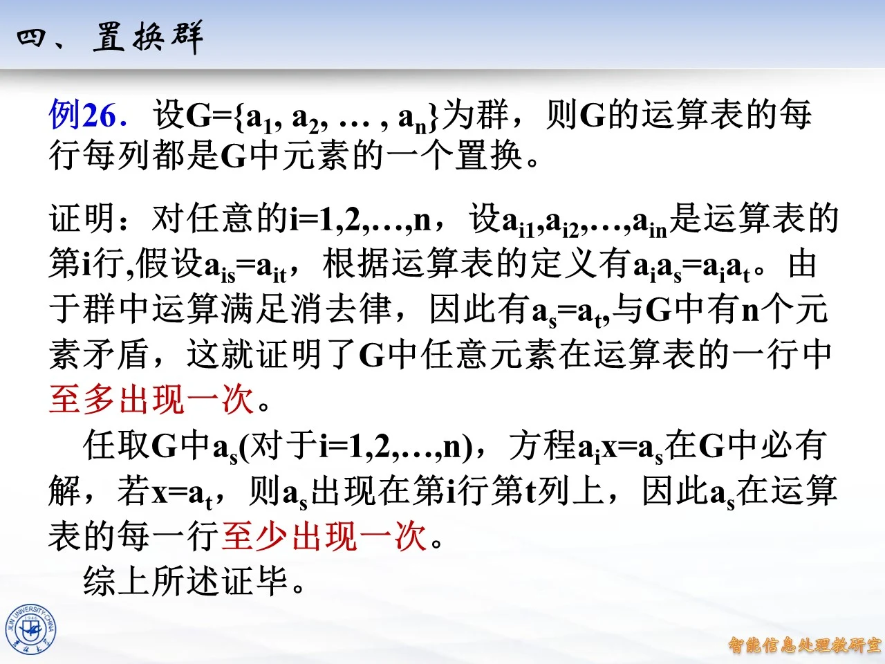
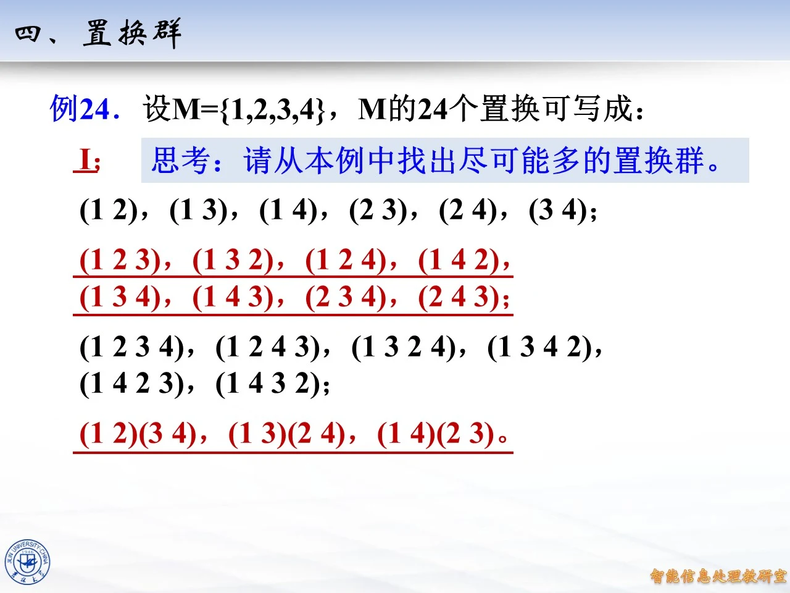

本主题讨论有限群的运算表（也叫群表、Cayley 表）的一个重要性质：表的每一行、每一列都恰好是群中全体元素的一个排列。这个性质常被称为群表的拉丁方性质，它是消去律与方程可解性在运算表上的直接体现。课件在讲完子群与群的定义之后安排这一内容，随后引出置换群的概念——正是因为群表的行和列都是"置换"，才自然过渡到把置换本身作为元素来构造群。本主题包含两个课件例题：例 26 证明运算表的行列都是置换，例 24 列举四次对称群的全部 24 个元素并要求从中找出置换群。注意：同一份课件在两次授课记录（第八章原版第 287-293 页、11 月 2 日授课第 100-107 页）中重复出现，内容完全一致，下面按页码逐一讲解，两处重复内容合并叙述。

课件原图 · 10月19日授课 · 第 566 页 查看前后已收录原页 → 例 26：群运算表的每行每列都是元素的一个置换
◆ p.287-288 ｜例 26 及其证明（同见 p.100-101）
例 26 断言：设 G = { a 1 , a 2 , … , a n } G=\{a_1,a_2,\ldots,a_n\} G = { a 1 , a 2 , … , a n } G G G G G G
先看第 i i i i i i j j j a i a j a_i a_j a i a j i i i a i a 1 , a i a 2 , … , a i a n a_i a_1, a_i a_2, \ldots, a_i a_n a i a 1 , a i a 2 , … , a i a n G G G
第一步：至多出现一次。假设第 i i i a s a_s a s a t a_t a t a i a s = a i a t a_i a_s = a_i a_t a i a s = a i a t a i a s a_i a_s a i a s a i a t a_i a_t a i a t a i − 1 a_i^{-1} a i − 1 a s = a t a_s = a_t a s = a t s s s t t t G G G n n n a 1 , … , a n a_1,\ldots,a_n a 1 , … , a n G G G
第二步：至少出现一次。任取 G G G a s a_s a s a i x = a s a_i x = a_s a i x = a s a i − 1 a_i^{-1} a i − 1 x = a i − 1 a s x = a_i^{-1} a_s x = a i − 1 a s a i − 1 a s a_i^{-1} a_s a i − 1 a s G G G a t a_t a t a i a t = a s a_i a_t = a_s a i a t = a s a s a_s a s i i i t t t a s a_s a s i i i
综合两步：a s a_s a s i i i n n n G G G i i i G G G n n n j j j a 1 a j , … , a n a j a_1 a_j, \ldots, a_n a_j a 1 a j , … , a n a j x a j = a s x a_j = a_s x a j = a s x = a s a j − 1 x = a_s a_j^{-1} x = a s a j − 1
拓展 （课件外补充）：证明中"消去律管不重复、方程可解性管不遗漏"这个分工值得记住。还要注意一个边界：拉丁方性质（每行每列都是排列）只能推出消去律和方程可解，不能 单独保证结合律，所以一张每行每列都不重复的表未必是群表；反过来，题目若已明确给出群，就可以放心使用这个性质补全或检查运算表。例如模 5 非零元素乘法群的运算表，每一行 [ a ⋅ 1 , a ⋅ 2 , a ⋅ 3 , a ⋅ 4 ] m o d 5 [a\cdot 1, a\cdot 2, a\cdot 3, a\cdot 4] \bmod 5 [ a ⋅ 1 , a ⋅ 2 , a ⋅ 3 , a ⋅ 4 ] mod 5 1 , 2 , 3 , 4 1,2,3,4 1 , 2 , 3 , 4

课件原图 · 第八章-2-原版 (1) · 第 288 页 查看前后已收录原页 → 置换群与对称群
◆ p.289-290 ｜置换群的定义（同见 p.102-103）
课件给出定义：置换群是由若干个 n n n n n n
这里有几个概念要理清。n n n { 1 , 2 , … , n } \{1,2,\ldots,n\} { 1 , 2 , … , n } n n n S n S_n S n n n n n ! n! n ! S n S_n S n S n S_n S n
拓展 （课件外补充）：S n S_n S n n ! n! n ! S 4 S_4 S 4 4 ! = 24 4! = 24 4 ! = 24 S 3 S_3 S 3 ( 12 ) (12) ( 12 ) ( 123 ) (123) ( 123 ) ( 123 ) (123) ( 123 ) ( 12 ) (12) ( 12 )
例 24：列出 S 4 S_4 S 4
◆ p.291-292 ｜例 24（同见 p.104-105）
课件例 24：设 M = { 1 , 2 , 3 , 4 } M=\{1,2,3,4\} M = { 1 , 2 , 3 , 4 } M M M ( 1 2 3 ) (1\,2\,3) ( 1 2 3 ) 1 → 2 1\to 2 1 → 2 2 → 3 2\to 3 2 → 3 3 → 1 3\to 1 3 → 1
六个对换（2 轮换）：( 1 2 ) , ( 1 3 ) , ( 1 4 ) , ( 2 3 ) , ( 2 4 ) , ( 3 4 ) (1\,2), (1\,3), (1\,4), (2\,3), (2\,4), (3\,4) ( 1 2 ) , ( 1 3 ) , ( 1 4 ) , ( 2 3 ) , ( 2 4 ) , ( 3 4 )
八个 3 轮换：( 1 2 3 ) , ( 1 3 2 ) , ( 1 2 4 ) , ( 1 4 2 ) , ( 1 3 4 ) , ( 1 4 3 ) , ( 2 3 4 ) , ( 2 4 3 ) (1\,2\,3), (1\,3\,2), (1\,2\,4), (1\,4\,2), (1\,3\,4), (1\,4\,3), (2\,3\,4), (2\,4\,3) ( 1 2 3 ) , ( 1 3 2 ) , ( 1 2 4 ) , ( 1 4 2 ) , ( 1 3 4 ) , ( 1 4 3 ) , ( 2 3 4 ) , ( 2 4 3 )
六个 4 轮换：( 1 2 3 4 ) , ( 1 2 4 3 ) , ( 1 3 2 4 ) , ( 1 3 4 2 ) , ( 1 4 2 3 ) , ( 1 4 3 2 ) (1\,2\,3\,4), (1\,2\,4\,3), (1\,3\,2\,4), (1\,3\,4\,2), (1\,4\,2\,3), (1\,4\,3\,2) ( 1 2 3 4 ) , ( 1 2 4 3 ) , ( 1 3 2 4 ) , ( 1 3 4 2 ) , ( 1 4 2 3 ) , ( 1 4 3 2 )
三个双对换：( 1 2 ) ( 3 4 ) , ( 1 3 ) ( 2 4 ) , ( 1 4 ) ( 2 3 ) (1\,2)(3\,4), (1\,3)(2\,4), (1\,4)(2\,3) ( 1 2 ) ( 3 4 ) , ( 1 3 ) ( 2 4 ) , ( 1 4 ) ( 2 3 )
合计 6 + 8 + 6 + 3 = 23 6+8+6+3=23 6 + 8 + 6 + 3 = 23 e e e 4 ! = 24 4! = 24 4 ! = 24 1 + 1 + 1 + 1 1+1+1+1 1 + 1 + 1 + 1 2 + 1 + 1 2+1+1 2 + 1 + 1 ( 4 2 ) = 6 \binom{4}{2}=6 ( 2 4 ) = 6 2 + 2 2+2 2 + 2 3 + 1 3+1 3 + 1 4 × 2 = 8 4\times 2=8 4 × 2 = 8 4 4 4 ( 4 − 1 ) ! = 6 (4-1)!=6 ( 4 − 1 )! = 6
拓展 （课件外补充）：这道思考题的完整解答如下。找置换群就是找 S 4 S_4 S 4 S 4 S_4 S 4
子群阶
个数
构造
1
1
{ e } \{e\} { e }
2
9
每个 2 阶元素生成 { e , t } \{e, t\} { e , t }
3
4
⟨ ( 1 2 3 ) ⟩ , ⟨ ( 1 2 4 ) ⟩ , ⟨ ( 1 3 4 ) ⟩ , ⟨ ( 2 3 4 ) ⟩ \langle(1\,2\,3)\rangle, \langle(1\,2\,4)\rangle, \langle(1\,3\,4)\rangle, \langle(2\,3\,4)\rangle ⟨( 1 2 3 )⟩ , ⟨( 1 2 4 )⟩ , ⟨( 1 3 4 )⟩ , ⟨( 2 3 4 )⟩ e e e
4
7
3 个循环群 ⟨ ( 1 2 3 4 ) ⟩ , ⟨ ( 1 2 4 3 ) ⟩ , ⟨ ( 1 3 2 4 ) ⟩ \langle(1\,2\,3\,4)\rangle, \langle(1\,2\,4\,3)\rangle, \langle(1\,3\,2\,4)\rangle ⟨( 1 2 3 4 )⟩ , ⟨( 1 2 4 3 )⟩ , ⟨( 1 3 2 4 )⟩
6
4
分别固定 1 , 2 , 3 , 4 1,2,3,4 1 , 2 , 3 , 4 { e , ( 1 2 ) , ( 1 3 ) , ( 2 3 ) , ( 1 2 3 ) , ( 1 3 2 ) } \{e,(1\,2),(1\,3),(2\,3),(1\,2\,3),(1\,3\,2)\} { e , ( 1 2 ) , ( 1 3 ) , ( 2 3 ) , ( 1 2 3 ) , ( 1 3 2 )}
8
3
保持分组 { 1 , 2 } ∣ { 3 , 4 } \{1,2\}\mid\{3,4\} { 1 , 2 } ∣ { 3 , 4 }
12
1
A 4 A_4 A 4 e e e
24
1
S 4 S_4 S 4
合计 1 + 9 + 4 + 7 + 4 + 3 + 1 + 1 = 30 1+9+4+7+4+3+1+1=30 1 + 9 + 4 + 7 + 4 + 3 + 1 + 1 = 30 { e , ( 1 2 ) ( 3 4 ) , ( 1 3 ) ( 2 4 ) , ( 1 4 ) ( 2 3 ) } \{e,(1\,2)(3\,4),(1\,3)(2\,4),(1\,4)(2\,3)\} { e , ( 1 2 ) ( 3 4 ) , ( 1 3 ) ( 2 4 ) , ( 1 4 ) ( 2 3 )} { e , ( 1 2 ) , ( 3 4 ) , ( 1 2 ) ( 3 4 ) } \{e,(1\,2),(3\,4),(1\,2)(3\,4)\} { e , ( 1 2 ) , ( 3 4 ) , ( 1 2 ) ( 3 4 )} ( 1 3 ) , ( 2 4 ) (1\,3),(2\,4) ( 1 3 ) , ( 2 4 ) ( 1 4 ) , ( 2 3 ) (1\,4),(2\,3) ( 1 4 ) , ( 2 3 ) ( 1 2 ) ( 3 4 ) ∘ ( 1 3 ) ( 2 4 ) = ( 1 4 ) ( 2 3 ) (1\,2)(3\,4)\circ(1\,3)(2\,4) = (1\,4)(2\,3) ( 1 2 ) ( 3 4 ) ∘ ( 1 3 ) ( 2 4 ) = ( 1 4 ) ( 2 3 ) ( 1 2 ) ∘ ( 3 4 ) = ( 1 2 ) ( 3 4 ) (1\,2)\circ(3\,4) = (1\,2)(3\,4) ( 1 2 ) ∘ ( 3 4 ) = ( 1 2 ) ( 3 4 ) D = { e , r , r 2 , r 3 , s , r s , r 2 s , r 3 s } D=\{e, r, r^2, r^3, s, rs, r^2 s, r^3 s\} D = { e , r , r 2 , r 3 , s , rs , r 2 s , r 3 s } r = ( 1 3 2 4 ) r=(1\,3\,2\,4) r = ( 1 3 2 4 ) s = ( 1 2 ) s=(1\,2) s = ( 1 2 ) { 1 , 2 } \{1,2\} { 1 , 2 } { 3 , 4 } \{3,4\} { 3 , 4 }
◆ p.293 ｜结束页与章封面（同见 p.106-107）
本页块覆盖第 293 页，括注的 p.106-107 为重复来源的对应页：第 106 页为"谢谢"结束页、第 107 页为章封面（第八章 群、环、域，吉林大学 董旭初），均无实质教学内容，为过渡页，并入本小节。
拓展 （课件外补充）：学习置换群时建议动手算几个乘积，例如 ( 1 2 3 ) ∘ ( 1 2 ) = ( 1 3 ) (1\,2\,3)\circ(1\,2) = (1\,3) ( 1 2 3 ) ∘ ( 1 2 ) = ( 1 3 ) ( 1 2 ) ∘ ( 1 2 3 ) = ( 2 3 ) (1\,2)\circ(1\,2\,3) = (2\,3) ( 1 2 ) ∘ ( 1 2 3 ) = ( 2 3 )

课件原图 · 第八章-2-原版 (1) · 第 292 页 查看前后已收录原页 →